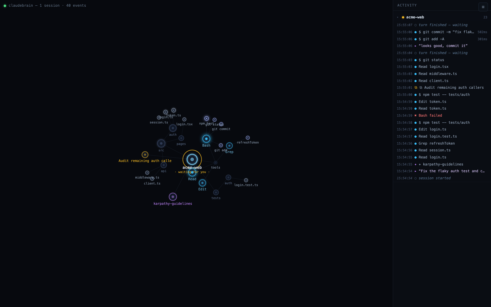

claudebrain
watch Claude Code think
A live synapse-graph for every Claude Code session on your machine — tool calls pulse across the wire, halos tell you the moment one needs you.
v0.4.6 · Universal · signed & notarized · free & open source

Every session, one living graph
claudebrain turns Claude Code's hooks into a real-time map of what's actually happening, across every terminal you have open.
Live activity graph
Every concurrent session blooms on one canvas — a single always-on view of everything Claude Code is doing right now.
Action pulses
Every tool call travels its path as a labeled pulse of light — Read, Edit, Bash, Grep — and failures pulse red so you notice.
Waiting radar
Halos read the room at a glance: green is working, amber is waiting for you, red means a session needs permission.
Prompt from the UI
Type straight into a session's tmux pane without alt-tabbing back to the terminal it's actually running in.
Start sessions from the graphNEW 0.4.5
Spin up a fresh Claude Code session directly from the canvas — no need to leave the view to begin one.
Inspect & copy everything
Every node opens into paste-runnable commands and git-style diffs, ready to drop straight back into your shell.
Semantic zoom
Zoom out and whole directories collapse into single aggregate nodes, so busy sessions stay legible at any scale.
Late join & persistence
Open claudebrain mid-session and the whole graph rebuilds from history — you never miss the first act.
How it works
Three steps between here and watching your first session bloom.
Download & open ClaudeBrain
Grab the signed, notarized Universal build above and launch it like any other Mac app.
Click Install Hooks
One dialog wires up Claude Code's hooks — your existing settings are backed up automatically first.
Start any session
Run Claude Code as usual and watch it bloom into a live node cluster on the canvas.
Prefer Homebrew?
brew tap softorize/tap && brew install claudebrain
Your terminal is already thinking.
Give it a window.